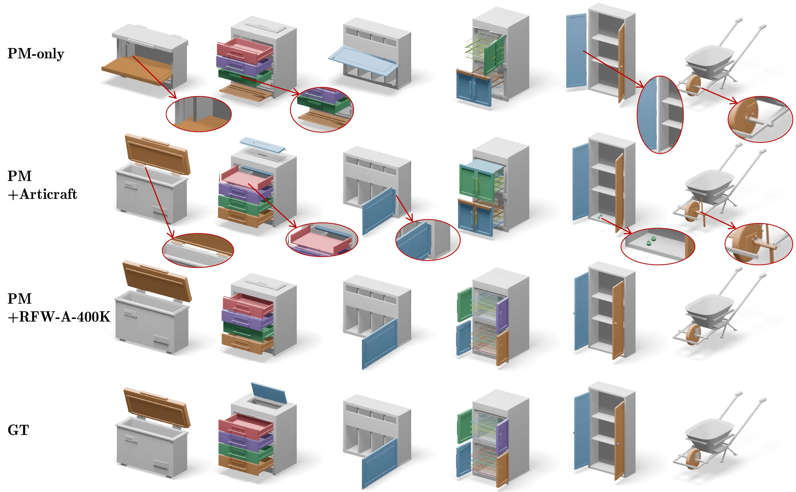

Full-release assets passing the kinematic validity check.
RFW-A: Agentic Procedural Generation of 400K Articulated Assets over 500 Categories
Indoor · Articulated assets generated with RFW-AExplore this scene ↓
Read the abstract ＋
IMAGE → GENERATOR → ARTICULATED ASSETS
Explore RFW-A-400K
One category generator. Many possibilities. Explore variations in structure, materials, and motion.
402,410articulated assets
531object categories
2.68Mparsed links
84.65%assets with multiple movable joints
Find a category
Loading image-grounded generators…
01 Input image
02 Same generator · different seeds Select a preview to explore ↓
Generated previews use the same camera direction and are fitted individually. Click a seed to load its 3D model.
Loading model…
DRAG TO ROTATE · CLICK A PART · SCROLL TO ZOOMSelect a part
Explore scenes
Select an object to explore its motion, mass, materials, and joints.
Select a numbered object in the scene or use the buttons above.
01 / 04Indoor
Method
Build a category generator, validate it, then sample articulated assets with grounded materials and physics.
Generation cost
Adjust the sample count to see the API cost per asset.
11,000 ASSETS
RFW-A$0.053per asset
Per-asset agentic synthesis$1.237per asset
Estimated API cost only; procedural compute is excluded. Mean generator authoring: $10.62. Based on 10 categories and 200 successful baseline synthesis records.
Directed editing
Pick an object and change exactly one thing — a component, a count, a material, a dimension. Every edited model is a real run of the same generator with one field changed; the reference configuration stays fixed for comparison.
1 Pick an object2 Choose what to change3 Compare side by side
drag to orbit
drag to orbit
Change
To
CONFIGURATION EDIT
Every output is a real run of the same generator with exactly one field changed — not a re-sampled lookalike. Models are baked in a fixed pose; joint interaction lives in the asset explorer. Cameras share a fixed frame per edit group, so size edits stay true to scale.
Materials & physics
A shared library links PBR appearance to six physical properties. Seeded material selection binds appearance and physical annotations together.
18families
124material classes
8,295PBR materials
A consistent material vocabulary connects appearance and physical behavior across the dataset.
ONE MATERIAL ENTRY → SIX PHYSICAL PROPERTIES
ρDensity kg/m³EYoung’s modulus PaνPoisson’s ratio —μₛStatic friction —μₖDynamic friction —eRestitution —
Physical validation
Kinematic validity, simulator import, and stable rollouts.
Core-200 assets imported across the evaluated simulators.
One-second stable rollouts on Core-200.
Results
Dataset scale, asset quality, and articulation estimation. Select a column to sort.
Qualitative results ＋

Robotic manipulation
Cabinet
Open the cabinet door with the left arm, then close it with the right arm.
Loading task videos…
Select a video to enlarge.
Real-world success
Retrieval
Retrieval + 4 Edit
Retrieval + 9 Edit
500 simulation demonstrations per task, with the same policy architecture and training budget. Mean success over five tasks, with 10 real-world trials per task.
Results by task
Simulation demos
Citation
@misc{rfwa2026,
title = {RFW-A: Agentic Procedural Generation of 400K Articulated Assets over 500 Categories},
author = {Lyu, Yuanbo and Pan, Changjian and Zhang, Saining and Yang, Yi and others},
year = {2026},
note = {Public identifier to be added}
}